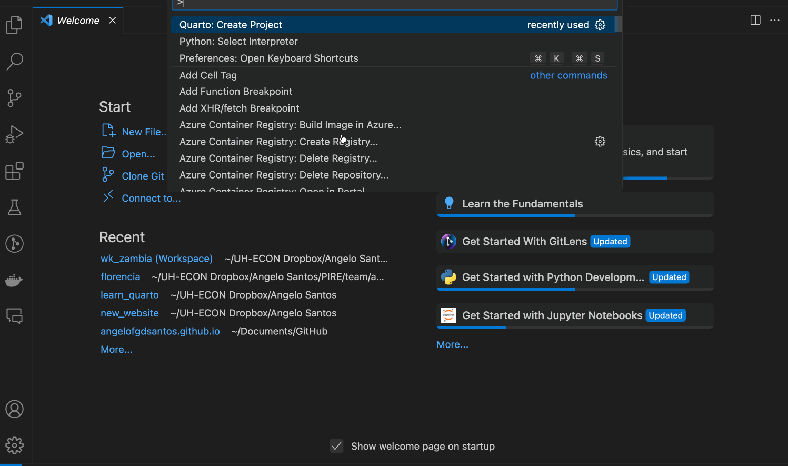

Websites
Websites are powerful tools to show your work to the world! Not only that, can be a great way to document and organize your projects in a visual way - exaclty what I am trying to do right now 😬
This Page will have multiple sections on how to customize your website, from the basic to the fancy stuff. I hope to include enough content to create a nice website for yourself 🤙🏽 let’s do it!
Remember that Quarto has a great website with A LOT of information on websites.
1 Website setup
First things first, we need to learn how to setup the basic structure of our website. This include first order things like themes, titles, format, navigation bar and others.
To start, create a website Quarto Project to generate the base files. I am using VS Code and this is what I need to do:

After creating a project folder, you can fin a file called _quarto.yaml. This is the key file to setup your website settings. For example, this is the _quarto.yaml for this website:
---
project:
type: website
output-dir: ../../docs
website:
title: "Learning Quarto"
navbar:
left:
- href: index.qmd
text: Home
- href: websites.qmd
text: Websites
- href: dashboard.qmd
text: Dashboards
- text: Examples
menu:
- href: authoring.qmd
text: Example 1
- href: computational.qmd
text: Example 2
- href: walkthrough.qmd
text: Example 3
format:
html:
theme: sketchy
toc: true
---- 1
- Type of project you are working on
- 2
- Output folde
- 3
- Website title
- 4
- Structure and labels of navigation bar
- 5
- Website Theme
1.1 Customization
A nice thing about a personal website is to own it and make it reflect your style! Take care, this can bring you to a noendless rabbit hole, and sometime it is hard to get out 🫠
I will go over some customizations that I learned while creating my content.
1.1.1 Themes
1.1.2 Style
- Fonts
- Colors
1.1.3 Logo and Favicons
I really like logos and favicons. For some reason I believe they can tell something about you, your story or just make the website visually satisfying.
In my case, I choosed a tree for my personal website favicon and logo, why 🤔 I love nature and hiking, trees are gorgeous and so diverse! They are impressive separatelly and together as a biosystem. Also, I am an enviromental economist working with deforestation, nothing more clear than a tree for my logo.
But what really matters is…
website:
title: "Angelo Santos"
favicon: /images/favicon.ico
navbar:
logo: /images/favicon-32x32.png
left:- 1
- Define your favicon
- 2
- Define a logo that show up with the website title
I encourage you to look for favicon online, maybe AI can also help with creating an original and nice favicon. Tell us someone about you or you document through this!